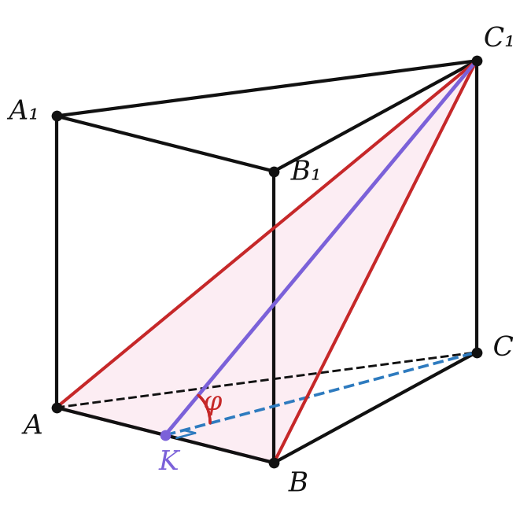
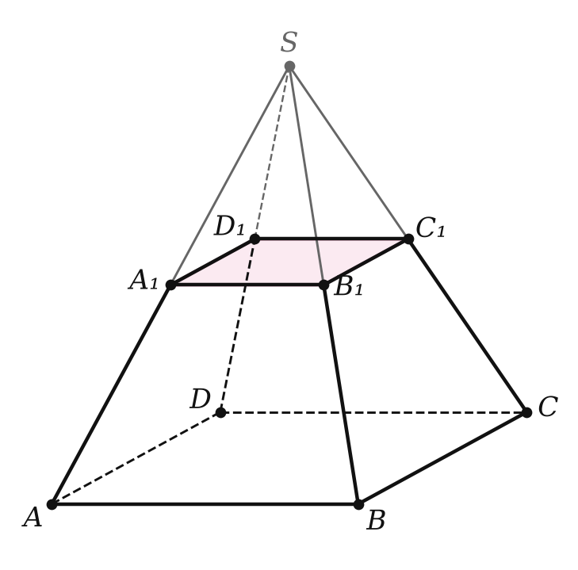

Сводка главы
Это урок-повторение. Почти любая задача главы 4 решается одним приёмом: найти внутри многогранника нужный плоский многоугольник — прямоугольный треугольник, прямоугольную трапецию, сечение — и считать в нём. Ниже — опорные таблицы (первые строки повторяют итоги главы на с. 250 учебника, последние добавлены по § 22–23).
Определения
| понятие | определение |
|---|---|
| многогранник | тело, поверхность которого состоит из конечного числа многоугольников; выпуклый — расположен по одну сторону от плоскости каждой своей грани |
| n-угольная призма | две грани — равные n-угольники в параллельных плоскостях, остальные n граней — параллелограммы |
| прямая / правильная призма | прямая — боковые рёбра ⊥ основанию; правильная — прямая, основание правильный многоугольник |
| n-угольная пирамида | одна грань — n-угольник, остальные — треугольники с общей вершиной |
| правильная пирамида | основание — правильный многоугольник, основание высоты — его центр; боковые рёбра равны, боковые грани — равные равнобедренные треугольники |
| апофема правильной пирамиды | высота боковой грани, проведённая из вершины |
| усечённая пирамида (§ 22) | часть пирамиды между основанием и секущей плоскостью, параллельной основанию; боковые грани — трапеции |
| ортоцентрический / равногранный тетраэдр (§ 23) | высоты пересекаются в одной точке / все грани — равные треугольники |
Формулы и свойства
| что | формула или свойство |
|---|---|
| боковая поверхность прямой призмы | Sбок = Pосн · l (для наклонной — периметр перпендикулярного сечения на l) |
| параллелепипед | диагонали пересекаются в одной точке и делятся ею пополам |
| прямоугольный параллелепипед | d² = a² + b² + c² |
| правильная пирамида | Sбок = ½Pосн · d; h² + r² = d², h² + R² = l² |
| равные двугранные углы φ при основании | вершина проектируется в центр вписанной окружности; Sбок = Sосн / cos φ |
| правильная усечённая пирамида | Sбок = ½(P₁ + P₂) · d; d² = h² + (r₂ − r₁)² |
| тетраэдр | средние линии делятся пополам; медианы делятся 3 : 1; Менелай: (DM/MA)(AK/KC)(CP/PB)(BN/ND) = 1 |
Разбор примеров

Сторона основания правильной треугольной призмы ABCA₁B₁C₁ равна 4√3, боковое ребро 8. Найдите площадь полной поверхности, угол между плоскостью ABC₁ и основанием и площадь сечения ABC₁.
1) Поверхность (§ 19). Призма прямая: Sбок = 3 · 4√3 · 8 = 96√3, Sосн = (4√3)² · √3/4 = 12√3, Sполн = 120√3.
2) Угол (глава 3). K — середина AB, CK ⊥ AB, CK = 4√3 · √3/2 = 6. CK — проекция C₁K, по теореме о трёх перпендикулярах C₁K ⊥ AB, и ∠C₁KC — линейный угол: tg φ = 8/6, φ = arctg (4/3).
3) Сечение. C₁K = √(36 + 64) = 10, площадь ½ · 4√3 · 10 = 20√3. Проверка площадью проекции: треугольник ABC — проекция сечения, cos φ = 6/10, 12√3 : 0,6 = 20√3 — сошлось.
Измерения прямоугольного параллелепипеда ABCDA₁B₁C₁D₁: AB = 2, AD = 3, AA₁ = 6. Найдите диагональ параллелепипеда, рёбра тетраэдра ACB₁D₁, а также расстояние и угол между прямыми AC и B₁D₁.
1) Диагональ (§ 20): √(4 + 9 + 36) = 7.
2) Рёбра тетраэдра — диагонали граней: AC = B₁D₁ = √13, AB₁ = CD₁ = 2√10, AD₁ = CB₁ = 3√5. Противоположные рёбра равны — тетраэдр равногранный (§ 23).
3) AC и B₁D₁ лежат в параллельных плоскостях оснований, расстояние между ними — высота: 6. B₁D₁ ∥ BD, угол между диагоналями прямоугольника 2 × 3: cos φ = (9 − 4)/13, φ = arccos (5/13).

Сторона основания правильной четырёхугольной пирамиды 12, высота 8. Через середину высоты проведена плоскость, параллельная основанию. Найдите площадь боковой поверхности пирамиды и получившейся усечённой пирамиды.
1) Пирамида (§ 21): r = 6, апофема √(64 + 36) = 10, Sбок = ½ · 48 · 10 = 240.
2) Отсечённая пирамида подобна исходной с коэффициентом ½, её сторона 6. Усечённая пирамида (§ 22): стороны 6 и 12, высота 4, сдвиг радиусов 6 − 3 = 3, апофема 5, Sбок = ½(24 + 48) · 5 = 180.
3) Проверка: площади подобных фигур относятся как k² = ¼, отсечённая пирамида имеет Sбок = 60, и 240 − 60 = 180.
Ребро правильного тетраэдра 6. Найдите высоту, площадь полной поверхности, косинус двугранного угла при ребре, угол и расстояние между скрещивающимися рёбрами.
1) Высота: R = 2√3, √(36 − 12) = 2√6. Поверхность: 4 · 9√3 = 36√3.
2) Двугранный угол при ребре основания — угол между апофемой 3√3 и r = √3: cos φ = √3 / (3√3) = 1/3.
3) AB ⊥ CD (AB ⊥ плоскости CDM, M — середина AB): угол 90°. Общий перпендикуляр — средняя линия, её длина 3√2.
Типичные ошибки главы
Sбок = P · l для наклонной призмы. Эта формула верна только для прямой призмы; для наклонной берут периметр перпендикулярного сечения.
«Квадрат в основании — значит, правильная». Пирамида правильная, только если высота падает в центр основания. Призма с квадратом в основании — правильная, только если она прямая.
r вместо R и наоборот. Апофема и двугранный угол при основании — через радиус вписанной окружности; боковое ребро и угол ребра с основанием — через радиус описанной.
Высота вместо апофемы. В формулы Sбок = ½P · d и ½(P₁ + P₂) · d входит апофема, а не высота пирамиды.
Равные диагонали у любого параллелепипеда. Диагонали равны только у прямоугольного параллелепипеда; у любого они лишь делятся пополам.
Перенос «треугольных» фактов на тетраэдр. Высоты тетраэдра пересекаются не всегда; медианы делятся 3 : 1, а не 2 : 1.
Задачи урока
Реши в тетради, к каждой задаче — чертёж. Разберём на занятии.
Тест к уроку
Домашнее задание
Задачи Д1–Д6 ниже, к каждой — рисунок и выделенный плоский треугольник или трапеция, в которых идёт счёт. Ещё раз прочитать итоги главы 4 (с. 250) и дополнить их своими строками про усечённую пирамиду и тетраэдр.